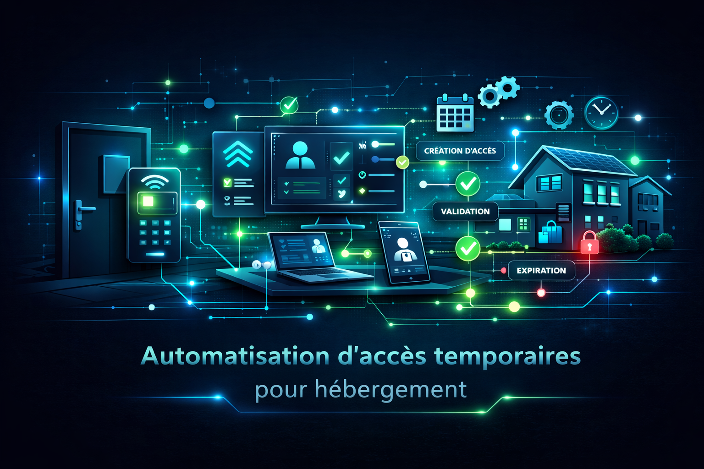

Logique métier • Contrôle d’accès
Automatisation d’accès temporaires pour hébergement
Conception et déploiement d’une installation domotique complète dans le cadre d’une rénovation lourde, avec intégration d’une logique d’exploitation partielle en hébergement.
Le projet a combiné coordination technique, câblage et raccordement des tableaux, programmation et mise en service, avec une attention particulière portée à la cohérence d’ensemble de l’installation.
Une logique d’autorisations temporaires a été mise en place avec différenciation des profils, renouvellement des accès et scénarios d’accueil, dans une approche évolutive et interfaçable avec des outils externes.